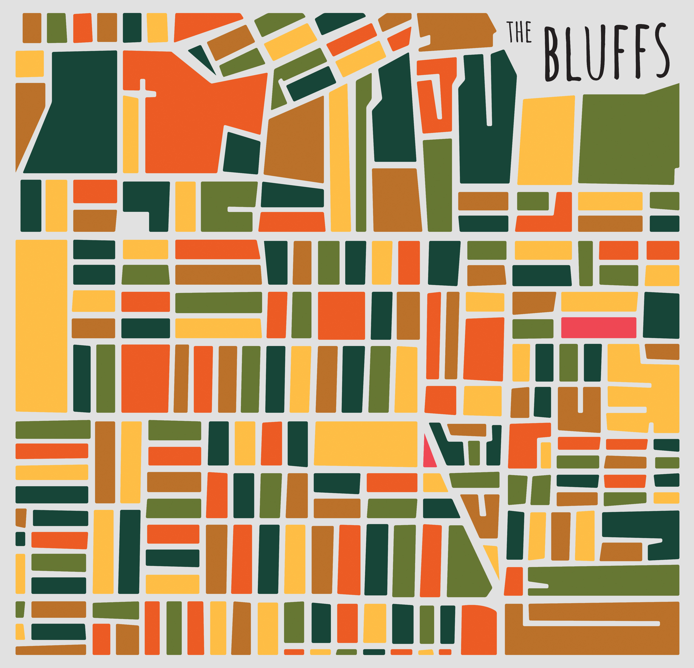
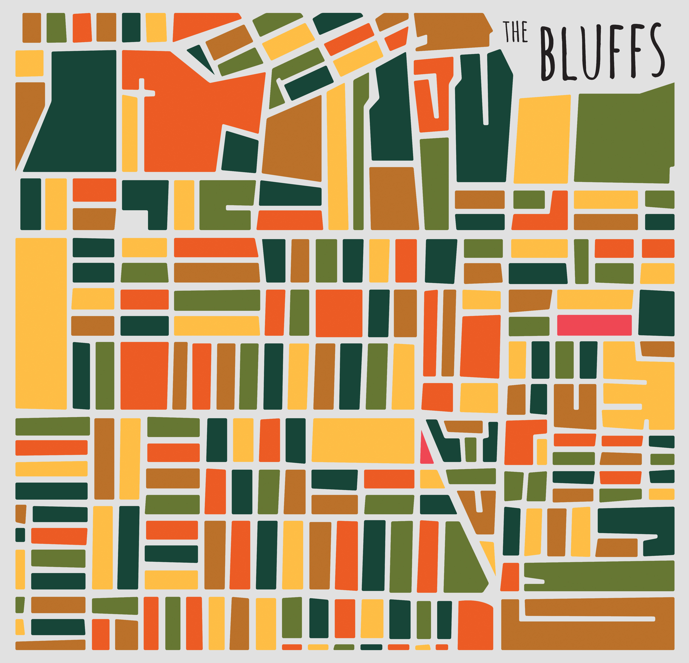

The Bluffs Project
This is a map I made for the Bluffs neighborhood of Moline, Illinois. The project involved turning a shed into something that would enhance the community. Inspired by the work of designer Jazzberry Blue, I created this map as part of a mural proposal for the city.
 
